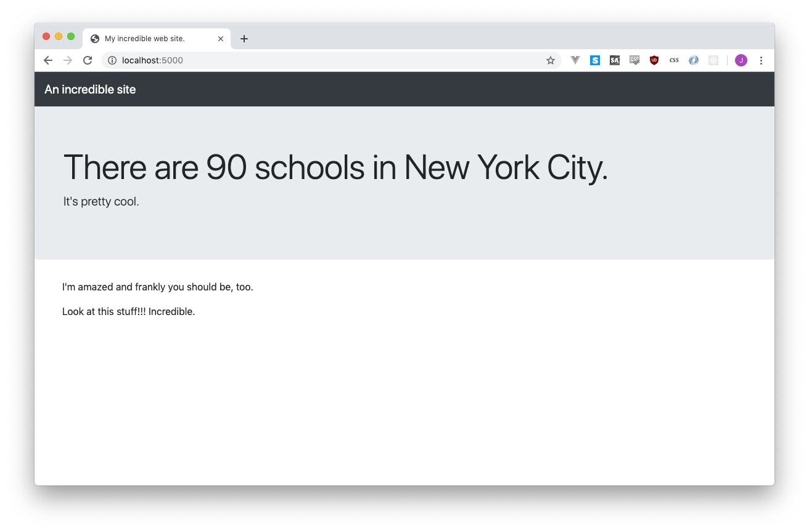
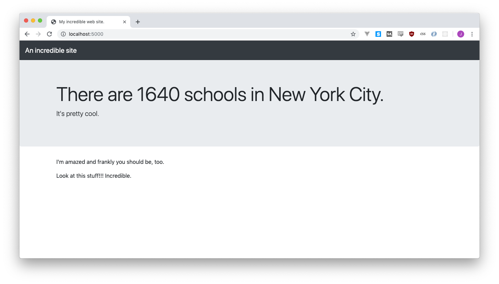
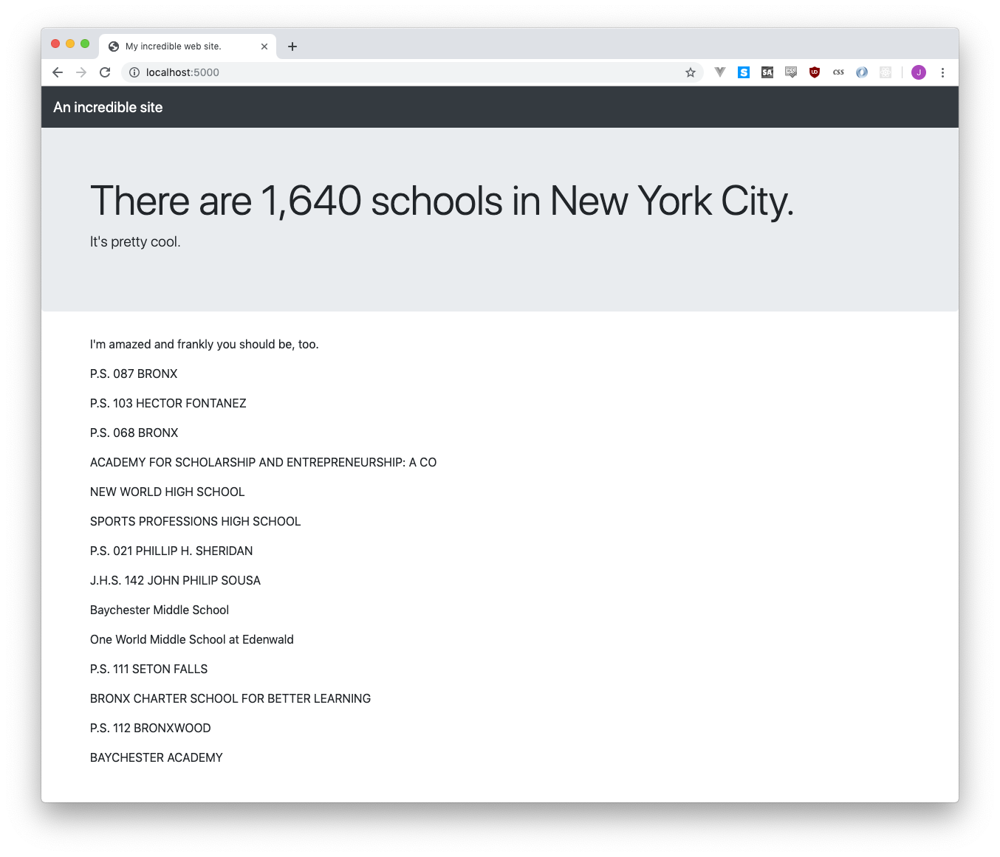
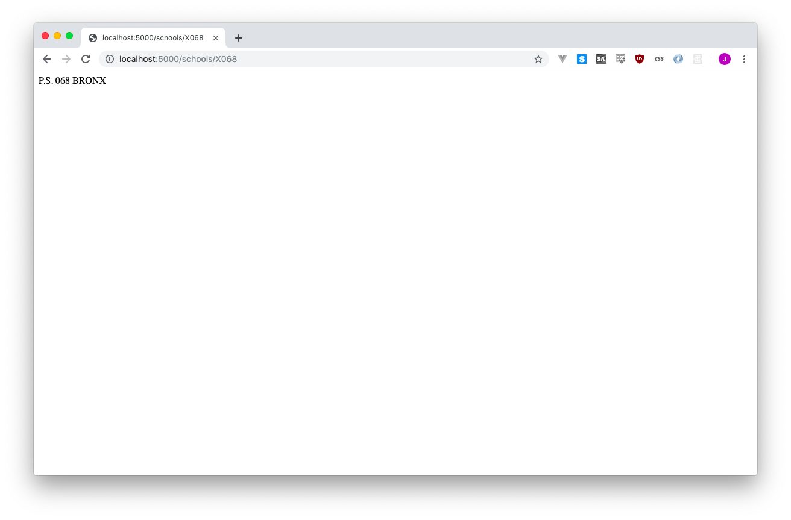
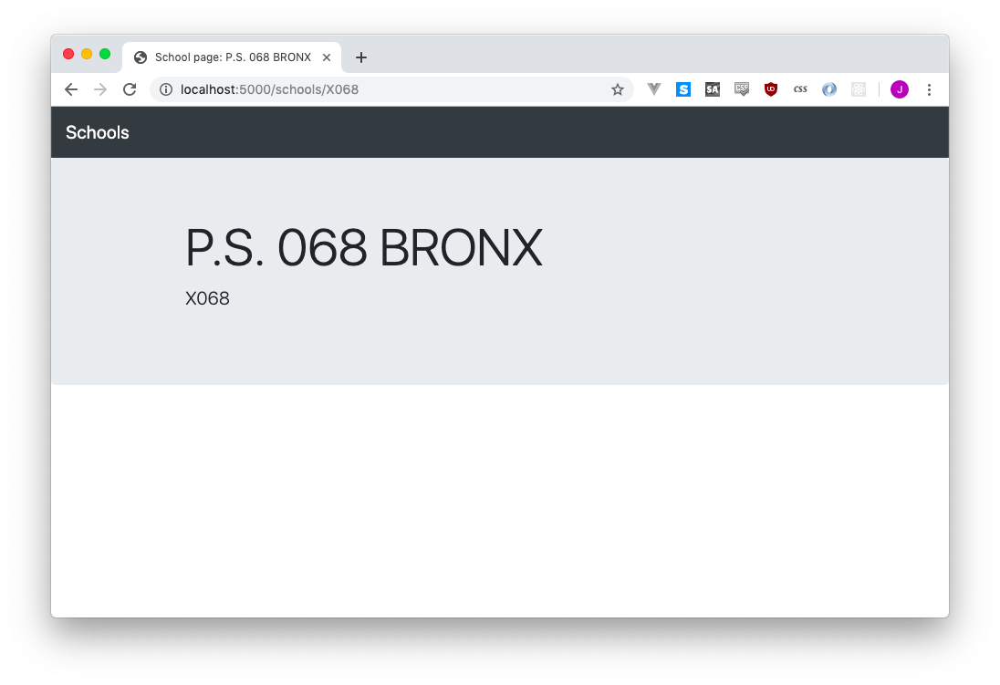
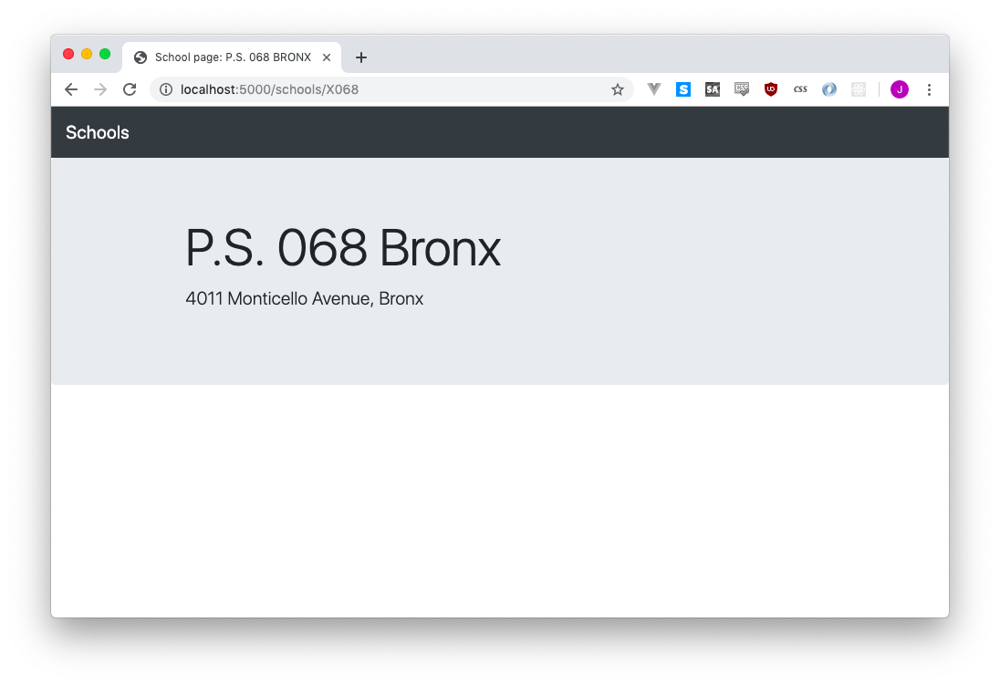
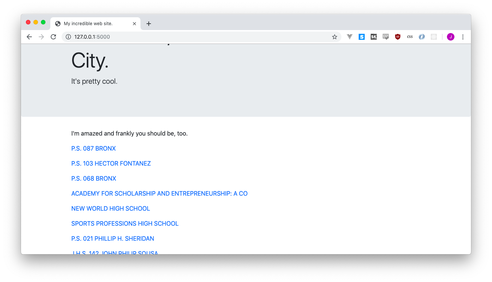
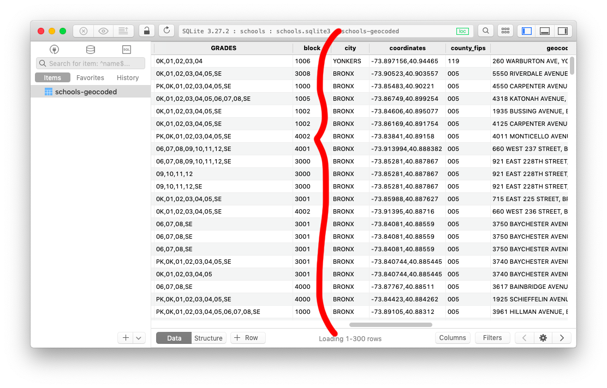
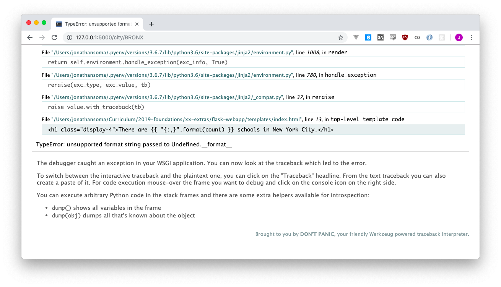
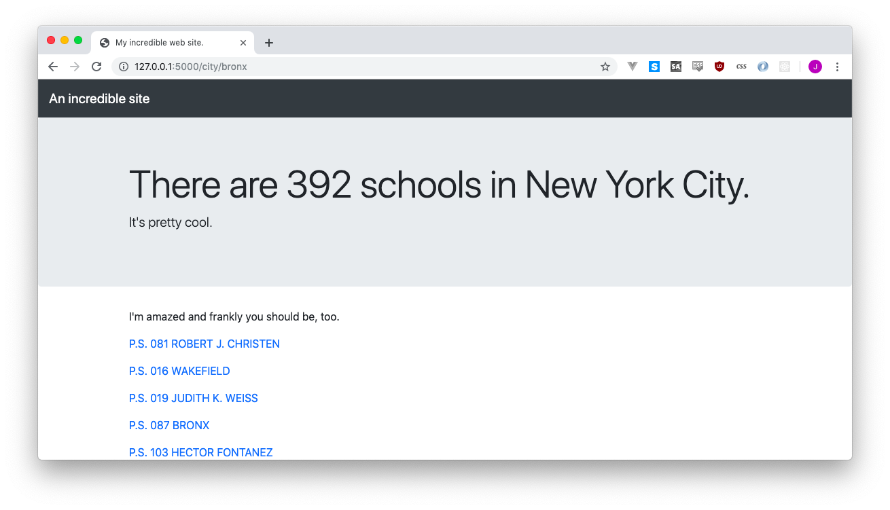

5 Putting data on the page
So far we’ve touched a lot of new technology! This might cover most of it:
- Flask, a Python web application framework
- HTML to draw a page, through the
render_templatemethod - CSS via Bootstrap to beautify our web page
- SQLite, our database system
- SQLAlchemy, our ORM
But fret not, we’re not done! We still have at least one more: a templating engine called Jinja, to help us add data from our database onto our web page.
5.1 Sending data to the template
Right now when we call render_template, all we give it is the name of the template. If we cut out the ORM practice, our / route looks pretty simple:
@app.route("/")
def hello():
# ....ignoring the ORM practice ....
return render_template("index.html")Turns out we can level things up by sending additional information to the template! Let’s say we wanted to send the number of schools to the web page, and we guessed it was around 900 schools. We could adjust the render_template call like this:
@app.route("/")
def hello():
# ....ignoring the ORM practice ....
return render_template("index.html", count=90)count is just a new variable name, it could be anything. potato, bubblegum, you could pick just about any variable name in there and you’d be fine. By count count=90 with render_template, we’re sending a variable called count to the template.
Now we just need to figure out how to use it!
Let’s go back to the template - templates/index.html - and make a little edit.
<div class="jumbotron">
<div class="container">
<h1 class="display-4">There are {{ count }} schools in New York City.</h1>
<p class="lead">It's pretty cool.</p>
</div>
</div>Refresh the page and be amazed!

That incredibly fake and contrived 90 wormed its way from the Python side of things to the HTML side of things without too much trouble.
5.2 Hello Jinja2
That {{ count }} thing is not HTML. Before Flask sends the web page to your browser, it goes through the page and finds things like {{ count }} and fills it in with variable names.
This is a templating language called Jinja2. It can do a lot more than fill-in-the-blanks, including loops and all sorts of stuff. It’s super useful and an odd combination of painless and painful. You’ll enjoy it!
The double-curly-braces thing - {{ }} - is pretty common across different templating languages. Sometimes you might hear them referred to as “mustaches,” thanks to mustache.js and the later handlebars.js. They might look similar to Jinja2, but don’t get distracted! Just think “oh mustaches sure ok” and move on with life.
5.3 Sending meaningful data to the template
This fake 90 is killin me, so lets’s adjust our app.py to send the actual number of schools. I’m going to cruelly ignore the print statements we added before (feel free to comment them out!).
@app.route("/")
def hello():
school_count = School.query.count()
return render_template("index.html", count=school_count)
Beautiful! Wonderful! Incredible!
You might be tempted to do the ORM query inside of render_template, like this:
return render_template("index.html", count=School.query.count())While this works, it just seems a little messy to me. Saving the count as another variable doesn’t kill anyone (I don’t think), and it’s potentially more organized if you end up sending more variables to the template.
5.3.1 Formatting your numbers
While “1640” is pretty ugly, “1,640” looks a little more solid. If we wanted to add commas, we could do it one of two ways. The second way is probably better, but the first one uses f-strings! Crises, crises.

In the first way, we add the commas before it goes to the template.
@app.route("/")
def hello():
school_count = f"{School.query.count():,}"
return render_template("index.html", count=school_count)So instead of sending an actual count to the template, we’re sending the pretty, comma-ful version. If we’re doing math in the template that’s a bad idea, but… maybe it’s fine otherwise?
Another option is to do the formatting in the template. Since Jinja is a Python thing, you can do Python things inside of the {{ }}………except f-strings! If we want to use Python’s string formatting, we need to do it with a slightly older style:
<div class="jumbotron">
<div class="container">
<h1 class="display-4">There are {{ "{:,}".format(count) }} schools in New York City.</h1>
<p class="lead">It's pretty cool.</p>
</div>
</div>This is probably the better way, as you’re preserving the formatting rules until exactly when you’re formatting it. If you love f-strings to death, though, it might give you a heart attack, so I figured I’d give you another option.
5.4 Sending lists to our template
Sending a single integer to our template is pretty easy, but so is sending a whole mess of things! Let’s send those schools we found, the ones from the 10466 ZIP code.
@app.route("/")
def hello():
school_count = f"{School.query.count():,}"
zip_schools = School.query.filter_by(ZIP='10466').all()
return render_template("index.html", count=school_count, schools=zip_schools)Adding schools=zip_schools sends another variable to our template. In the template, the variable will be called schools, but it will have the contents of the zip_schools variable. Now all we need to do is display them!
Over in HTML world, printing them is a little different than when we did the {{ count }}. Because there are multiples, we need a loop. Loops in Jinja2 are reasonably different than Python, but you’ll get the gist. We’ll put these down near the bottom, replacing Look at this stuff!!!:
<div class="container">
<p>I'm amazed and frankly you should be, too.</p>
{% for school in schools %}
<p>{{ school.SCHOOLNAME }}</p>
{% endfor %}
</div>Refresh, and you should be good to go! If not, make sure you matched up the variable names - schools=zip_schools and {% for school in schools %}. Also check that you used {% %} instead of { }.
In the same way that in app.py we used school.SCHOOLNAMEto grab theSCHOOLNAMEcolumn, we can do the same thing in the template. Anything you send throughrender_template` you’re free to use in the HTML side of things!
Remember that SQLALchemy is not like pandas, and you only get to use one item at a time!
schools.SCHOOLNAMEwill not give you the name for every single school, you’ll need to use a loop like a normal list.
5.5 Making school pages
5.5.1 Slugs
Back in historical times when we first talked about webapps, we described them like this:
Typically you end up with an automatically-generated web page for every single item in your database - whether it’s a doctor, or a school, or a company. That page can list all of the sorts of data that’s hiding in your database about that doctor, school, or company… but in a nice friendly that’s palatable to people who are allergic to Excel et al.
When you have these pages - we’ll call them “show” or “detail” pages - they need to live at a specific URL. If example.com has a list of states, you might click one to be send to the individual state detail page at one of the following:
example.com/states/2example.com/states/WAexample.com/states/washingtonexample.com/states-WA
The little bit at the end - the 2 or the WA or the washington, etc - is called the id or the slug. Practically speaking, the slug is how the webapp finds the state you’re interested in from the database.
We have a few options about what we could use for a slug, it just needs to be something unique for each row of our dataset. For example, every school has a different name! But if we used school name as the slug, we’d end up with:
http://example.com/schools/RIVERDALE / KINGSBRIDGE ACADEMY (MIDDLE SCHOOL / Hwhich doesn’t look exactly professional. An easy out is to use whatever the primary_true is in your database - it’s guaranteed to be unique, so each row in your database has a separate one. It might not be the most attractice, but it’s easy!
In our case, we set the primary_key in the last line of our model:
class School(db.Model):
__tablename__ = 'schools-geocoded'
__table_args__ = { 'extend_existing': True }
LOC_CODE = db.Column(db.Text, primary_key=True) There we go, LOC_CODE! So the Riverdale school we mentioned up above would be found at
http://example.com/schools/X141Which is a lot nicer.
The slug can be the primary key, but it doesn’t have to be! It can be anything unique. A lot of times you’ll take something that’s a string like “Riverdale Middle School” and convert it to something URL-friendly, like “riverdale-middle-school.” You’ll save this in a new column called
slugand make that be your slug.
5.5.2 Building our detail route
To build our detail page, we need a new route. This is going to be a special route, since the end of the URL can change - /schools/X141 is Riverdale, but /schools/X068 is Public School 068. To accomplish this we add a variable into our route.
@app.route('/schools/<slug>')
def detail(slug):
school = School.query.filter_by(LOC_CODE=slug).first()
return school.SCHOOLNAMENow anything can do into the part after /schools/. If we want to find P.S. 68, we’ll check out http://localhost:5000/schools/X068. And it works!

If we want to go line by line, we’ll start with the route. Any variables in the URL - and you can have a million! - are surrounded by angle brackets. These brackets don’t show up in the URL, they just mean “something else is gonna be there.”
@app.route('/schools/<slug>')When we make our function, we used to always use def hello(), but now our variable shows up in the parentheses.
def detail(slug):We then use that slug to filter through the schools (like a WHERE) and take the very first result.
Because we used first() SQLAlchemy gives us back one row that we can do things like .SCHOOLNAME on it. If we’d asked for all() instead, we’d have a list that we’d need to loop through (even if there was only one result!).
school = School.query.filter_by(LOC_CODE=slug).first()
return school.SCHOOLNAMEWe used return to print the school’s name to the web page, but now it’s time to upgrade to a full-fledged detail page.
5.5.3 Crafting a detail page
Before we make our actual detail page, let’s write the code to use the template. Kind of backwards, but let’s do it anyway!
Instead of using return with just school.SCHOOLNAME, we’ll ask it to send a new template. We’ll call this template detail.html, and send the school we found in the database, just like we sent the school count to the other template.
@app.route('/schools/<slug>')
def detail(slug):
school = School.query.filter_by(LOC_CODE=slug).first()
return render_template("detail.html", school=school)We’re missing detail.html, but we can fix that! Create a new file called detail.html and paste the following code into it.
<!doctype html>
<html>
<head>
<title>School page: {{ school.SCHOOLNAME }}</title>
<link rel="stylesheet" href="https://stackpath.bootstrapcdn.com/bootstrap/4.3.1/css/bootstrap.min.css" crossorigin="anonymous">
</head>
<body>
<nav class="navbar navbar-expand-lg navbar-dark bg-dark">
<a class="navbar-brand" href="#">Schools</a>
</nav>
<div class="jumbotron">
<div class="container">
<h1 class="display-4">{{ school.SCHOOLNAME }}</h1>
<p class="lead">{{ school.ADDRESS }}, {{ school.city }}</p>
</div>
</div>
<div class="container">
<p></p>
<p></p>
<p></p>
</div>
</div>
</body>
</html>Look at that!!! We can just use `{{ school.column_name }}`` anywhere on the page to fill in details about the school!

But… the text itself is kind of ugly, as 4011 MONTICELLO AVENUE, BRONX seems a little TOO MUCH LIKE YELLING FOR MY TASTES. Since our Jinja2 template is Python-based, though, a solution is not far off.
Just like we can do .upper() and .lower() on a string to make it ALL CAPS or all lowercase, Python has another fun string manipulator called .title(). Let’s change our address section to look like this:
<p class="lead">{{ school.ADDRESS.title() }}, {{ school.city.title() }}</p>You could even change the school.SCHOOLNAME in the same way! It looks beautiful now!

5.6 Linking from the index to the detail page
Right now you need to know the specific URL of a school in order to end up on the detail page. But who has time for that?! I think our homepage - our / route - should list all the schools and also include links to each of their detail pages. It’s easy enough!
A link in HTML looks like this:
<p><a href="http://example/states/WA">Washington</a></p>
<p><a href="http://example/states/VA">Virginia</a></p>
<p><a href="http://example/states/">Virginia</a></p>Or rather, a series of links in a series of paragaph tags. Right now if you look at index.html, we’re listing our schools in an almost-similar fashion.
{% for school in schools %}
<p>{{ school.SCHOOLNAME }}</p>
{% endfor %}If we want to change this to be links, we need to do a fill-in-the-blanks with the href="...", just like we did with the school’s name.
{% for school in schools %}
<p><a href="/schools/{{ school.LOC_CODE }}">{{ school.SCHOOLNAME }}</a></p>
{% endfor %}The href attribute now changes based on which school you’re looking at! Refresh the page and see all those sweet, sweet links. Click on any of them and you’ll be able to go back and forth between the school list and the school detail page.

But oh, wait! This is only the schools in a certain ZIP code. If you want to make it be all schools, you need to open up app.py and change a bit of code. Inside of def hello() we’re finding out schools like this:
zip_schools = School.query.filter_by(ZIP='10466').all()When we should instead do something like this:
zip_schools = School.query.all()And, well, calling it zip_schools doesn’t make much sense any more, so let’s rename our variable to just plain schools:
schools = School.query.all()
return render_template("index.html", count=school_count, schools=schools)5.7 Reusing templates
That’s a BIG web page we have now, though! It might make more sense if we had a few smaller web pages, ones where you could find a list of schools in a particular borough/city or zip code (…which we just got rid of).

If we look at the dataset, the city column seems like a good place to start. Let’s build a new route called city so people can browse to /city/BRONX and get all of the schools in the Bronx (although for now we’ll just print the number of schools instead of showing a list).
@app.route('/city/<cityname>')
def city(cityname):
schools = School.query.filter_by(city=cityname).all()
return f"This city has {len(schools)} schools"Take a peek at http://localhost:5000/city/BRONX and be amazed!
Note that the school counting text is an f-string, not a Jinja template!
I… don’t like that URL. We would much rather have /city/bronx instead of /city/BRONX, right? To fix that up, we just need to take whatever comes in as the search term, capitalize it, and then send it to the database. So if you type bronx or BROnx or bronX or whatever it’ll always be translated to BRONX when you search.
@app.route('/city/<cityname>')
def city(cityname):
schools = School.query.filter_by(city=cityname.upper()).all()
return f"This city has {len(schools)} schools"Seeing http://localhost:5000/city/bronx is a nicer experience, right? Right.
Now that we want to show a list of the schools, you might think it’s time we made yet another template. But what if… we didn’t need to do that? What if we could just re-use another template?
Typically you have a handful of templates, and re-use them in different routes (or “views”). Showing all of the schools in a particular zip code and all of the schools in a particular city and all of the schools in generally is practically the same thing, it’s just a list of schools.
Right now our index.html template takes a variable called schools and displays all of them. What if we just send the schools for this city on over to that template?
@app.route('/city/<cityname>')
def city(cityname):
schools = School.query.filter_by(city=cityname.upper()).all()
return render_template("index.html", schools=schools)
A horrible error!!! We didn’t pass it a count= variable, so when we tried to do this code:
There are {{ "{:,}".format(count) }} schools in New York City.it freaked out and panicked and shut down. An easy fix is to adjust our city route to also send the number of schools to the template - we don’t need to do .count() or anything, we can just stick with a simple len(schools)
@app.route('/city/<cityname>')
def city(cityname):
schools = School.query.filter_by(city=cityname.upper()).all()
return render_template("index.html", schools=schools, count=len(schools))
Hooray! A little better, except http://localhost:5000/city/bronx reads There are 392 schools in New York City., when we’re definitely just trying to look at the Bronx!
We don’t need a whole new template for that - we just need to adjust each template to print out where we’re looking, and change our view to send that data. Let’s call it location, and just have it be the city name:
@app.route('/city/<cityname>')
def city(cityname):
schools = School.query.filter_by(city=cityname.upper()).all()
return render_template("index.html", schools=schools, count=len(schools), location=cityname)We’ll make a tiny adjustment in our index.html to use the new variable:
<h1 class="display-4">There are {{ "{:,}".format(count) }} schools in {{ location.title() }}.</h1>and we now have There are 392 schools in Bronx on the top of our page! It also works for Manhattan and Brooklyn, too.
The Staten Island link, though, is http://localhost:5000/city/staten island, which is gross and ugly. Our little fix is going to be an extra step beyond .upper() on our city before we search in the database - we’ll also replace all - with spaces.
- We receive
staten-islandfrom the URL staten-islandgets the ‘-’ replaced with ’ ’, makingstaten islandstaten islandgets uppercased intoSTATEN ISLANDSTATEN ISLANDgets searched!
@app.route('/city/<cityname>')
def city(cityname):
cityname = cityname.replace("-", " ")
schools = School.query.filter_by(city=cityname.upper()).all()
return render_template("index.html", schools=schools, count=len(schools), location=cityname)Beauty! Success!
You can try doing it all in the
filter_bystatement, but then we’ll see “Staten-Island” printed out on the web page. Give it a try if you’d like!
5.7.1 Adding yet another route
And what about a route for zip codes? Easy-peasy! WE’ll just make a route called zip and do the exact same thing - same template, just with a different filter.
@app.route('/zip/<zipcode>')
def zip(zipcode):
schools = School.query.filter_by(ZIP=zipcode).all()
return render_template("index.html", schools=schools, count=len(schools), location=zipcode)Look at that! All of six seconds to get a brand new way to browse the schools.
5.7.2 Fixing up the root route
Before we jump ahead, there’s one tiny thing we need to fix - our root route! If you visit our homepage http://localhost:5000/ we get a nice big ‘location’ is undefined’ error.
This is because we didn’t send a location from our root route, so the template panics when it sees our schools in {{ location.title() }} phrase.
The app.py currently looks like this:
@app.route("/")
def hello():
school_count = School.query.count()
schools = School.query.all()
return render_template("index.html", count=school_count, schools=schools)If we don’t have a variable we’re passing in, how do we get a location to give to our template? …we can just use a string! Instead of location=cityname, we can just say location="New York City" and it works just fine.
return render_template("index.html", count=school_count, schools=schools, location="New York City")Voilà! Perfect, amazing, beautiful, and a total dream.
5.8 Cleaning up
Let’s clean up a little bit!
- Remove the
shoelacesandaboutroute (if you want anaboutroute later you can always add it back in) - Rename our root route function from
def hello()todef index(). It doesn’t change anything, really, but it’s a nicer name. - Change the navbar on
index.htmlto saySchoolsinstead ofAn incredible site - Rename
index.htmltolist.html(because it’s a list, right?) and change therender_templatecalls in our index, city and zipcode routes.
5.8.1 Our code
Overall, our Python code should now look like this:
# app.py
from flask import Flask
from flask import render_template
from flask_sqlalchemy import SQLAlchemy
app = Flask(__name__)
app.config['SQLALCHEMY_DATABASE_URI'] = 'sqlite:///schools.sqlite3'
db = SQLAlchemy(app)
db.Model.metadata.reflect(db.engine)
class School(db.Model):
__tablename__ = 'schools-geocoded'
__table_args__ = { 'extend_existing': True }
LOC_CODE = db.Column(db.Text, primary_key=True)
@app.route('/schools/<slug>')
def detail(slug):
school = School.query.filter_by(LOC_CODE=slug).first()
return render_template("detail.html", school=school)
@app.route('/zip/<zipcode>')
def zip(zipcode):
schools = School.query.filter_by(ZIP=zipcode).all()
return render_template("list.html", schools=schools, count=len(schools), location=zipcode)
@app.route('/city/<cityname>')
def city(cityname):
cityname = cityname.replace("-", " ")
schools = School.query.filter_by(city=cityname.upper()).all()
return render_template("list.html", schools=schools, count=len(schools), location=cityname)
@app.route("/")
def index():
school_count = School.query.count()
schools = School.query.all()
return render_template("list.html", count=school_count, schools=schools, location="New York City")
if __name__ == '__main__':
app.run(debug=True)Our list.html should look like this:
<!doctype html>
<html>
<head>
<title>My incredible web site.</title>
<link rel="stylesheet" href="https://stackpath.bootstrapcdn.com/bootstrap/4.3.1/css/bootstrap.min.css" crossorigin="anonymous">
</head>
<body>
<nav class="navbar navbar-expand-lg navbar-dark bg-dark">
<a class="navbar-brand" href="#">Schools</a>
</nav>
<div class="jumbotron">
<div class="container">
<h1 class="display-4">There are {{ "{:,}".format(count) }} schools in {{ location.title() }}.</h1>
<p class="lead">It's pretty cool.</p>
</div>
</div>
<div class="container">
<p>I'm amazed and frankly you should be, too.</p>
{% for school in schools %}
<p><a href="/schools/{{ school.LOC_CODE }}">{{ school.SCHOOLNAME }}</a></p>
{% endfor %}
</div>
</div>
</body>
</html>